0
回归基线：原有 Obot 不变差
用户仍能看到仪表板、市场、vMCP、MCP 服务器、技能、审计日志等原有导航；既有 vMCP/MCP 能力保留。
PASS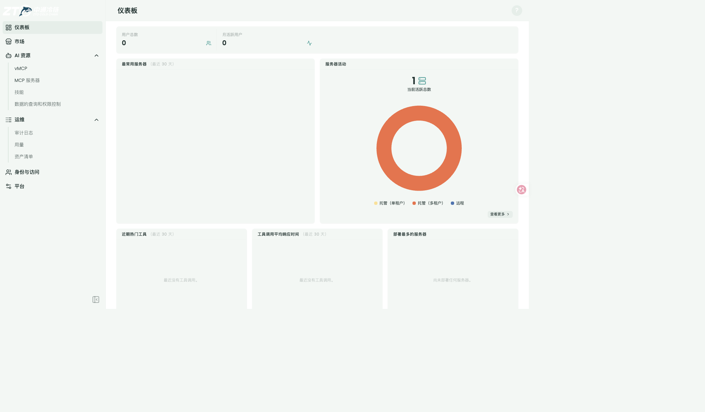
Obot 统一授权、预算与审计，多个无状态 OpenAPI Worker 通过 mTLS 执行 OpenAPI operation。
v2 在 v1 主线之上交付三项运营能力：Worker 运维看板（/metrics）、上游 schema 漂移自动探测（只探测不生效）、MCP / HTTP 双出口业务级审计，并修复 /usage 布局与两个 Worker 环境缺陷。
v1 将 OpenAPI 执行改为「Obot 统一授权 / 预算 / 租约 + 无状态 mTLS Worker」。v2 在此之上补齐运营面：Worker 自带 Prometheus 指标端点；catalog entry 周期性只读探测上游 schema 漂移并报告在 status（永不自动生效，采纳走管理员显式重新保存）；MCP tools/call 与 /api-proxy 两条出口新增业务级审计（operation、业务状态码、32 KiB 有界脱敏出入参），失败调用不再伪装成功。
Worker /metrics、漂移探测 controller + status 字段、bridge 业务审计、http/proxy 出口审计、审计 JSON-RPC error 标记。
/usage 布局脱离（h-dvh 裁切）、Worker 误拒 dev http baseURL、egress hosts 环境变量未读取、compose 预构建镜像不更新。
v1 全部能力、现有 vMCP / MCP / 目录 / 凭证存储 / UI 入口不变；Worker 仍无状态、无 Docker socket、无集群管理员依赖。
按真实使用顺序：先证明原有能力不回退，再从 FastAPI OpenAPI 源头进入 Obot，完成管理员录入、市场上架、最终用户发现 MCP 工具、授权调用和普通 HTTP 调用，最后审阅架构与扩缩容。以下 13 张截图与结论来自 v1 验收，代码回归确认仍然成立。
用户仍能看到仪表板、市场、vMCP、MCP 服务器、技能、审计日志等原有导航；既有 vMCP/MCP 能力保留。
PASS
业务方先提供标准 OpenAPI。页面展示 GET /items/{item_id}、必填 path 参数、query 参数和响应契约。
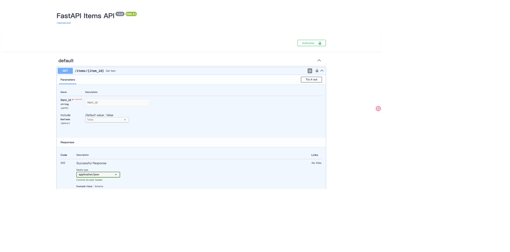
schema 声明 Authorization 为业务凭证 Header；Obot 侧平台 Key 与业务 Authorization 分离，注入由平台按用户实例完成。
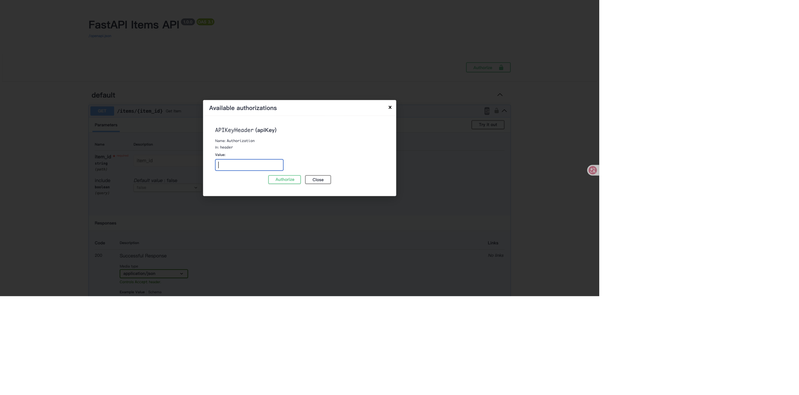
管理员在目录创建页导入 schema，预览 base URL 与建议的 Authorization 配置。
真实截图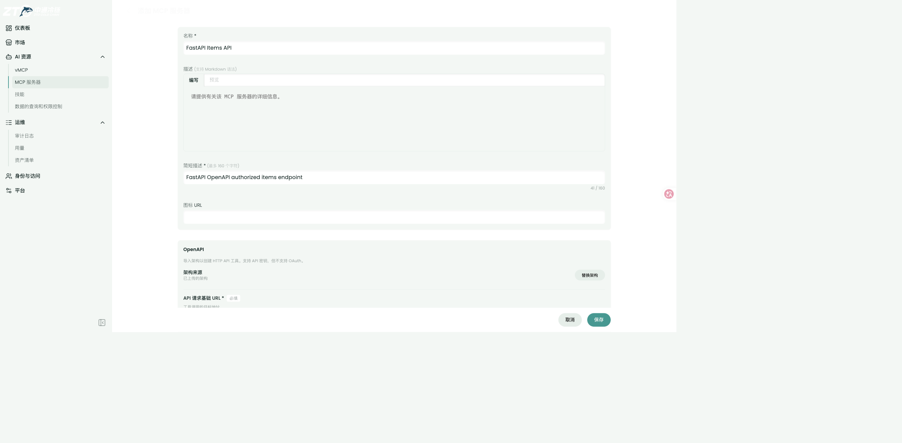
保存生成目录条目与授权配置，快照由 Source 重新导入生成并固定。
真实截图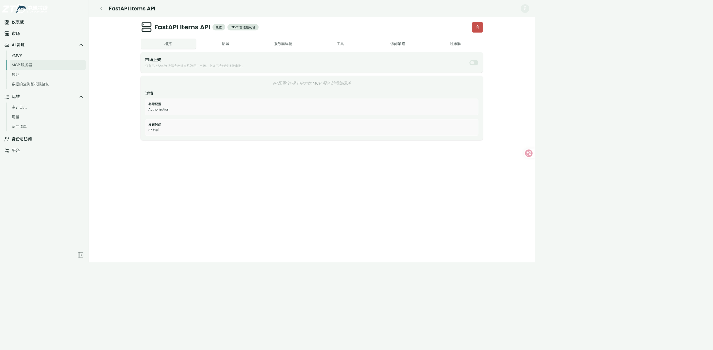
市场上架开关切换，目录元数据 marketPublished 从 false 到 true。
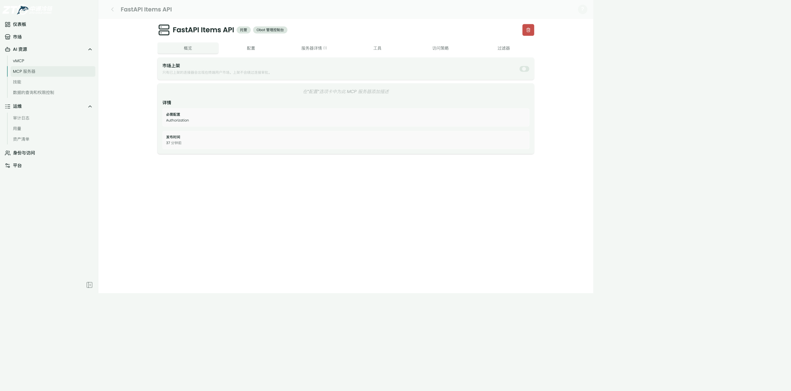
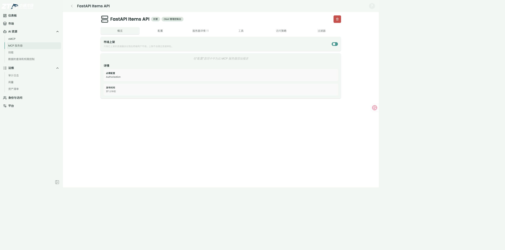
MCP Inspector tools/list 返回非空工具列表（bridge capabilities 声明 tools）。
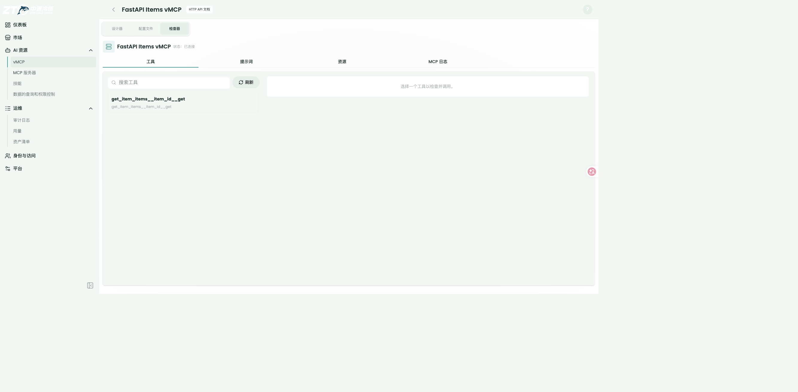
tools/call 走 bridge → Worker → 业务 API，返回真实业务结果。
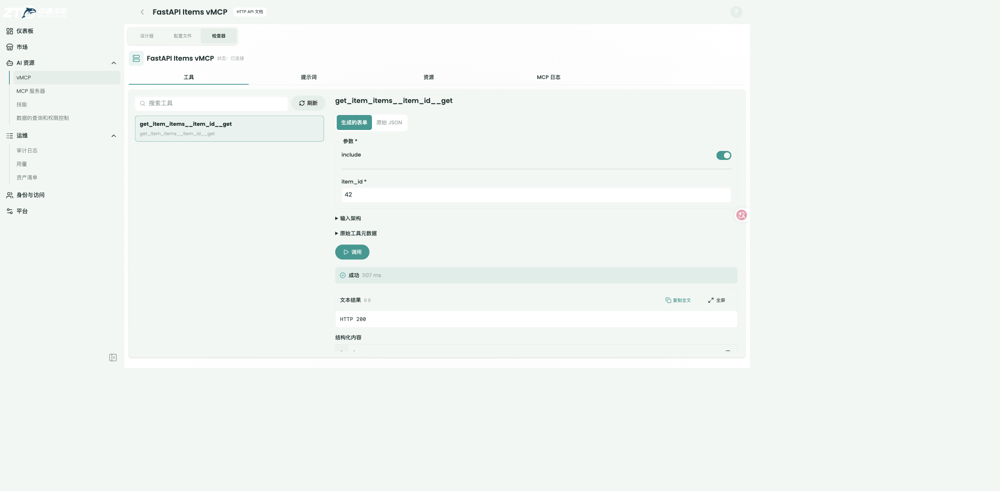
UI 文档弹窗展示 base path、参数与业务认证要求；/api-proxy/.../openapi.json 返回标准 OpenAPI 3.1 契约，仅含调用方可见字段。
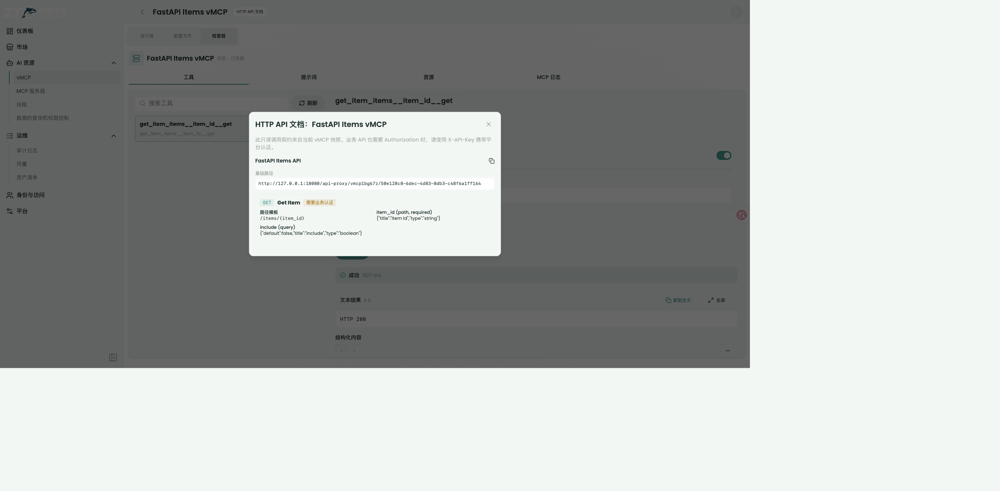
应用直接 GET /api-proxy/{vmcp}/{component}/items/42，返回业务 JSON。
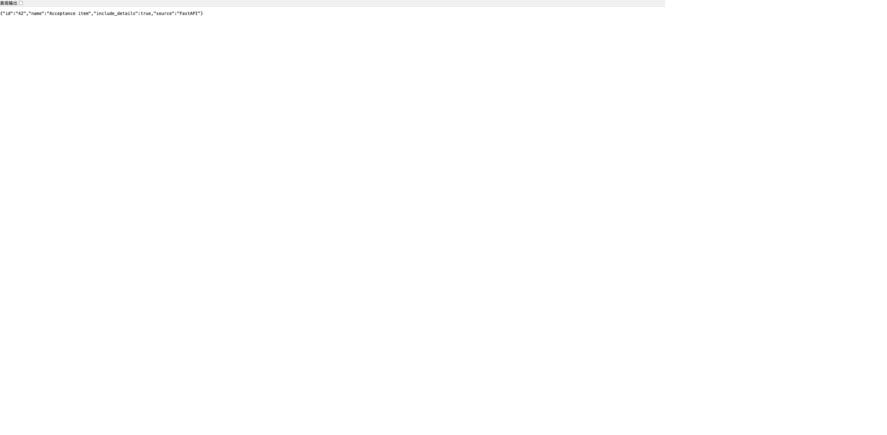
隔离 K3s 中 Obot 与 Worker 均以无状态 Deployment 运行，Worker 2 → 3 → 2 扩缩容全部 rollout 成功，无持久卷。
Scale PASS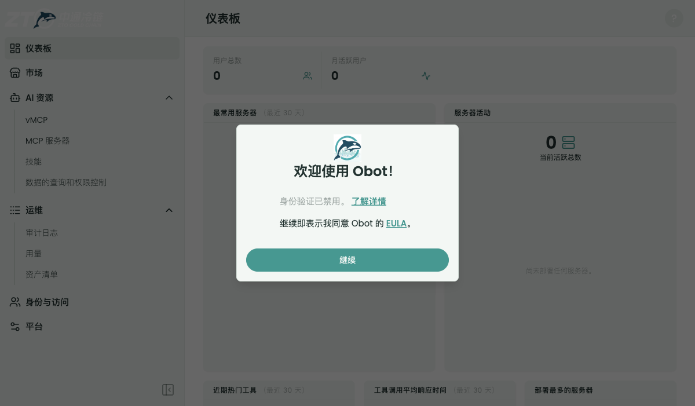
v2 增量按用户实际提出的三项要求组织：Worker 接运维看板、上游变化可探测但不生效、MCP 调用审计做好；加上验收中发现并修复的 /usage 布局问题。全部在真实 Compose 栈（新镜像 Obot 3b5422df / Worker bf5528dc）上执行，合成上游 v1↔v2 可切换。
MCPOpenAPIDriftProbeInterval）；生产默认 6h，机制由 RetryAfter 调度与单测保证（GAP-08）。同一 mTLS 监听新增 GET /metrics（Prometheus 文本格式 v0.0.4，零新依赖）：缓存水位 / 编译计数 / 请求时延 / 上游结果分布 / 快照生命周期事件。标签基数固定（路由、错误码、状态类），requestID / digest / URL / 凭证永不成为标签。
mTLS 抓取 200 计数精确 5/5 无证书握手即拒 无泄漏断言
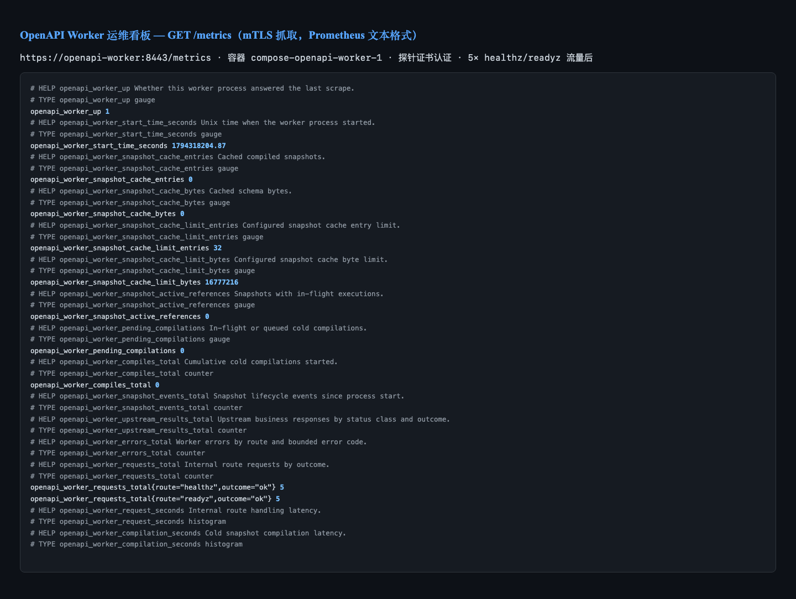
leader 上的 controller 周期性用与保存流程相同的无凭证 SSRF 安全 Importer 重新拉取 Source，把两侧 schema 编译成 canonical operation manifest 后精确 diff，结果写入 entry status 的 openAPISourceDrift。上游 v1↔v2 切换后一个周期内命中：
采纳走既有显式流程：管理员重新保存 entry → 快照切换为新 schema → 再探 clean。探测失败记录有界 probeError 并退避重试，不阻塞其他 handler。
命中分类精确 快照不动 显式采纳闭环
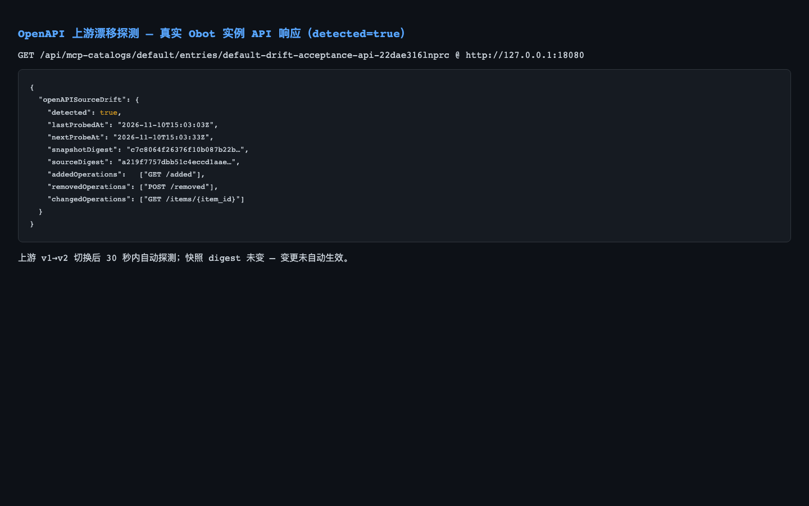
真实 MCP 会话（initialize → tools/list → tools/call）全链路打通后查库验证三层审计：聚合层记 JSON-RPC 协议语义；新增 bridge 层记业务执行（operation、业务状态码、32 KiB 有界脱敏出入参、组件身份）；新增 http/proxy 出口审计。失败调用不再伪装成功：
三层落库 失败标记 指标互证
McpUsageView 的 h-dvh（视口高）嵌在应用壳 h-svh 滚动容器内导致内容裁切。修复后完整可滚（docScrollH 1482 > viewport 800），页面展示的正是上一步审计产生的真实调用统计：getItem 计数、nonexistent 错误面板、vMCP 与组件双行服务器分布 —— 审计链路与用量页数据互相印证。
布局修复 pnpm check 0/0 spec 通过
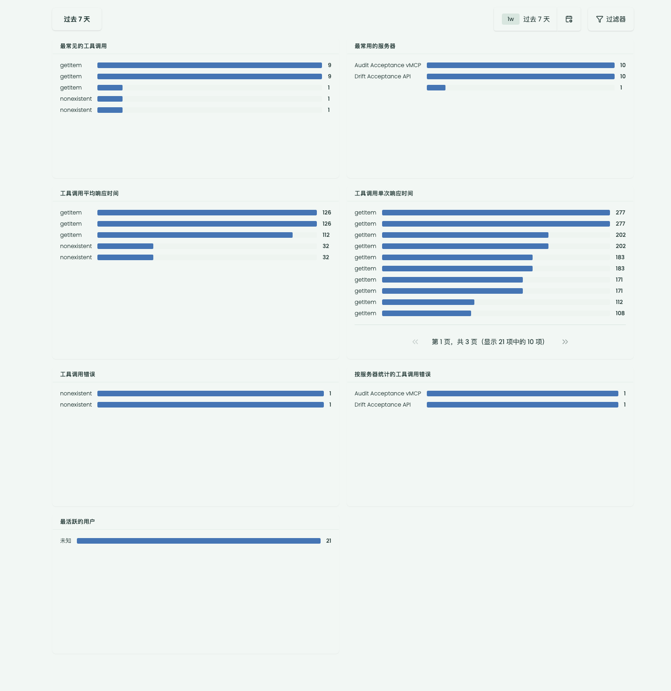
v1 用户故事 US-01 至 US-08 见 v1 包，全部继续有效。以下为 v2 增量故事。
运维：把 Worker 接入运维看板。
预期：/metrics mTLS 200、格式正确、计数与注入流量精确相等、无敏感标签。
截图 + 自动化证据
管理员：上游变化自动探测，但绝不自动生效。
预期：三类变化精确分类；探测后快照 digest 不变；显式重新保存后采纳并回 clean。
截图 + 状态断言
审计员：MCP tools/call 业务执行可审计。
预期：库中存在 bridge 层条目，含 operation、业务状态码、有界脱敏出入参、组件身份。
数据库实证
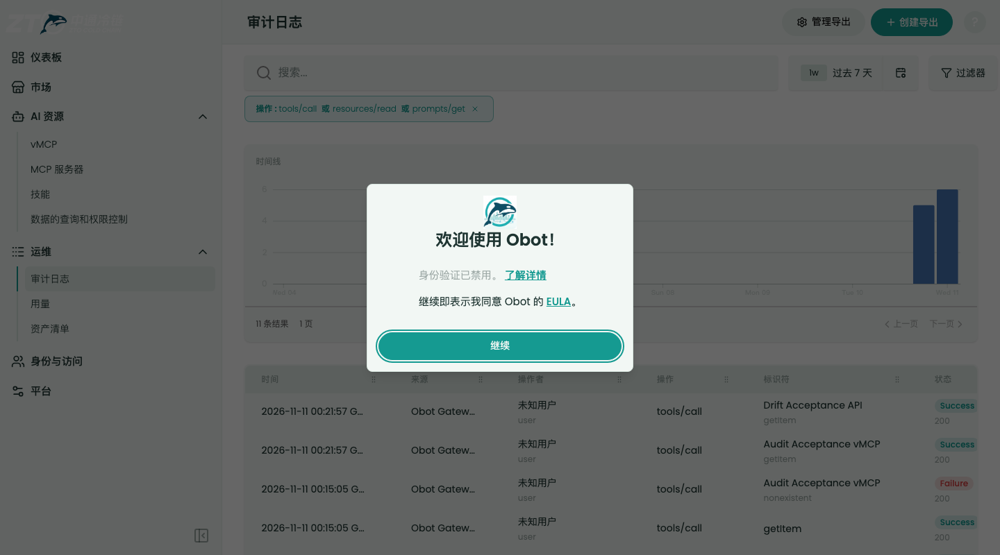
审计员：/api-proxy 每次业务调用可审计。
预期：http/proxy 条目含 operationKey、业务 status、有界 body、耗时。
数据库实证 + 单测 ×4
审计员：失败的调用不能伪装成功。
预期：JSON-RPC error 写入审计 error 字段（修复前 200 + 空 error）。
数据库实证
用户：/usage 用量页在全局布局内正常展示。
预期：内容完整可滚、不裁切；页面数据来自真实审计记录。
截图 + 布局度量
1 Obot（3b5422df）+ 2 Worker（bf5528dc）+ 1 PostgreSQL；Compose 栈验证后已清理。
host.docker.internal:18081，手写 v1/v2 schema，/__set_version 切换；v1 与 v2 覆盖加 / 删 / 改三类漂移。
Drift Acceptance API entry → Audit Acceptance vMCP → 真实 MCP 会话 → 聚合 → bridge → mTLS Worker → 上游。
完整流程（镜像重建坑、假上游规格、检查矩阵、截图流程、失败排查）固化为 Skill：.codex/skills/obot-openapi-acceptance/SKILL.md。
| 验证项 | 结果 | 证据层级 |
|---|---|---|
| v1 全部验证（Go/Python/UI/docs/formal/K8s/Compose） | PASS（继续有效） | 见 v1 包 |
| /metrics 格式 / 计数精确 / mTLS 负例 / 无泄漏 | PASS | OPS-ACCEPTANCE A1–A6 |
| 漂移探测命中分类 / 不自动生效 / 显式采纳闭环 | PASS | OPS-ACCEPTANCE B1–B9 · 真实栈 |
| 漂移 handler 单测（跳过 / 退避 / 失败 / 未配置） | PASS ×6 | 自动化 |
| 漂移 diff 单测（无变化 / 加删改 / 仅描述 / 缺输入） | PASS ×4 | 自动化 |
| bridge + http/proxy 审计单测（成功 / 失败 / 截断 / nil） | PASS ×4+ | 自动化 |
| 真实 MCP tools/call 三场景落库（成功 / 未知工具 / HTTP） | PASS | 数据库行 + 指标互证 |
| /usage 布局修复 + spec + pnpm check | PASS | 布局度量 + 自动化 |
| 05 全量回归 + 02 / 03 / 01 写集镜像同步 | PASS | 自动化 |
| Worker 测试（v2 轮含 metrics / egress 增量） | 28/28 | 自动化 |
| 区域 | 主要路径 | 验收重点 |
|---|---|---|
| Worker 运维指标 | workers/openapi/openapi_worker/metrics.py | 固定标签基数、无泄漏断言、零新依赖 |
| 漂移探测 | pkg/openapi/drift.go · .../mcpservercatalogentry/openapidrift*.go | 只读探测、status 报告、显式采纳 |
| bridge 业务审计 | .../mcpgateway/openapi_bridge_audit.go | 剥离 ignore 标志、组件身份、有界脱敏 |
| HTTP 出口审计 | .../apiproxy/audit.go | http/proxy 条目、operationKey、截断标记 |
| 失败标记修复 | .../mcpgateway/proxy_audit.go | JSON-RPC error 写入审计 error 字段 |
| /usage 布局 | ui/user/src/routes/usage/McpUsageView.svelte | 移除 h-dvh，滚动容器内自然高度 |
| Worker egress / baseURL | workers/openapi/openapi_worker/{app,snapshot}.py | 环境变量解析、test flag 下 http 放开 |
| 验收 Skill | .codex/skills/obot-openapi-acceptance/SKILL.md | 复跑流程、镜像重建坑、失败排查表 |
v1 其余审阅入口（Python Worker / openapiworker / apiproxy / authz / 预算租约 / DB migration / UI 弹窗 / Compose / K8s）见 v1 包第 6 节，全部不变。
| ID | 缺口 | 影响 | 状态 |
|---|---|---|---|
| GAP-01 | 未使用真实企业 IdP / 业务系统 / JWT | 不能声明企业授权交换或生产业务安全 | 生产 pending |
| GAP-02 | 未部署生产 ingress / cert-manager / 镜像仓库 | 未验证生产 TLS、容量与发布流程 | 生产 pending |
| GAP-03 | (v2) 未部署真实 Prometheus / Grafana | /metrics 兼容性由 exposition 格式与 content-type 断言，未接真实看板 | 部署接线 pending |
| GAP-04 | K8s 验收在隔离 K3s，不在公司已有 Namespace | 未验证公司 RBAC / 网络 / 存储策略 | 预发 pending |
| GAP-05 | 未在 K8s 中逐一杀死 Pod 录制完整长链路矩阵 | 崩溃恢复由模型与回归覆盖，生产故障注入待做 | 预发 pending |
| GAP-06 | 实现尚未 commit / push | 无法产生真实 PR diff；当前需人工审阅 worktree | 待用户确认 |
| GAP-07 | 本地 auth disabled，Admin 市场页显示未上架条目 | 不能用当前 Admin 页面证明真实普通用户市场可见性 | 本地 UI 未验证 |
| GAP-08 | (v2) 漂移生产 6h 间隔未等待实测（30s 加速覆盖） | 长周期调度由 RetryAfter 机制与单测保证 | 生产 pending |
| GAP-09 | (v2) I04 CaptureBoundedAudit 仍无调用方 | 新审计写入器内联实现了等价有界捕获；合并去重是后续工作 | 记录在案 |
| GAP-10 | (v2) tools/call 双层审计（协议 + 业务）按设计共存 | UI 分组会同时显示 vMCP 与组件行；合并视图是 UI 后续工作 | 记录在案 |
本地 / 用户验收：Ready。v1 主线全部继续有效；v2 三项增量（看板 / 漂移探测 / 审计闭环）与 /usage 修复全部有真实链路证据，计数与数据库记录精确互证。
生产验收：NOT READY。必须补真实企业授权、真实业务 API、生产或预发 Namespace、生产 TLS 与证书轮换、容量与故障注入、真实看板接线。
v1 轮 8 项（PRE-01 至 PRE-08）见 v1 包第 9 节，全部保持已修复状态。v2 轮新增 7 项：
| ID | 问题 | 修复 / 证据 | 状态 |
|---|---|---|---|
| PRE-09 | OpenAPI tools/call 业务执行零审计：组件层被 AuditLogIgnore 有意跳过、bridge 什么都不写，业务状态码 / operation 对审计不可见 | 新增 bridge 业务审计：剥离 ignore 标志、组件身份、32 KiB 有界脱敏出入参；库中实证 display=Drift Acceptance API status=200 | FIXED |
| PRE-10 | JSON-RPC 失败伪装成功：unknown tool 记 200 + 空 error | 解析 JSON-RPC error 写入审计 error 字段；库中实证 jsonrpc error -32602 | FIXED |
| PRE-11 | /api-proxy 出口零审计（I04 有界采集器无调用方） | 新增 http/proxy 审计 + 4 单测；库中实证 operationKey / status / 30ms | FIXED |
| PRE-12 | /usage 页 h-dvh 嵌在 h-svh 滚动容器内裁切内容 | 移除 h-dvh；实测 docScrollH 1482 > viewport 800 完整可滚 | FIXED |
| PRE-13 | Worker _validate_manifest 无条件拒 http baseURL，与 Obot dev 模式不一致 → vMCP launch snapshot_invalid | 仅在 OPENAPI_WORKER_ALLOW_LOCAL_TEST_EGRESS=1 时放开 http；launch 200 | FIXED |
| PRE-14 | compose 传 OPENAPI_WORKER_ALLOWED_EGRESS_HOSTS 但 Worker 不读（hosts 硬编码）→ transport_uncertain | Worker 解析该环境变量；metrics 实证 execute ok=1 | FIXED |
| PRE-15 | compose 预构建镜像 tag 不随 up --build 重建 → 新代码不进容器（症状：新端点 404 / 旧行为） | 验收 Skill 固化双镜像显式重建 + 二进制符号核对步骤 | FIXED |
evidence/OPS-ACCEPTANCE.md 与 evidence/AUDIT-E2E-ACCEPTANCE.md；需要 v1 细节再看 evidence/I05R-VERIFICATION.md。.codex/skills/obot-openapi-acceptance/SKILL.md。